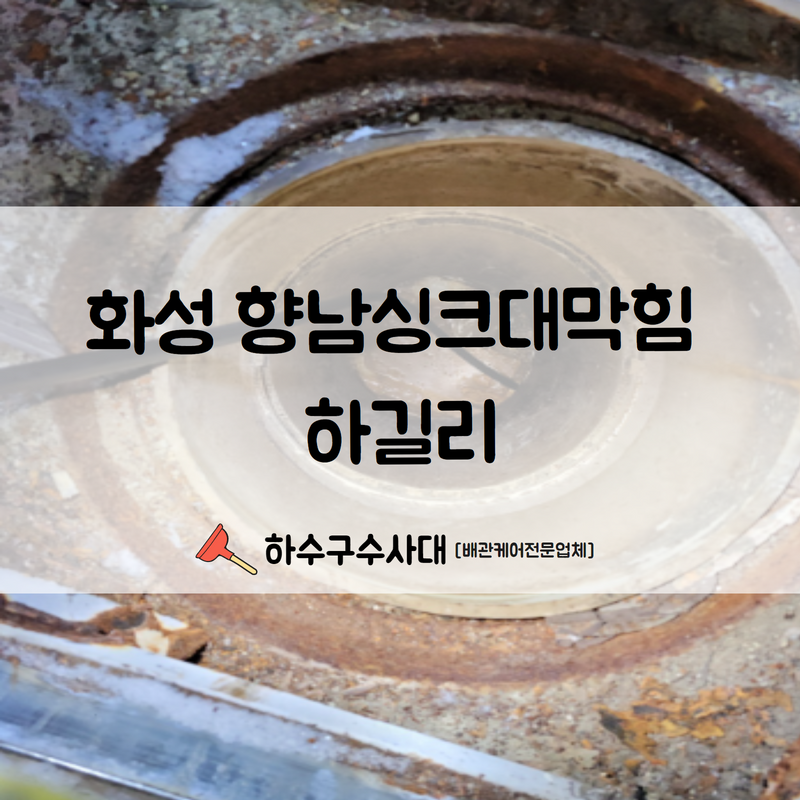
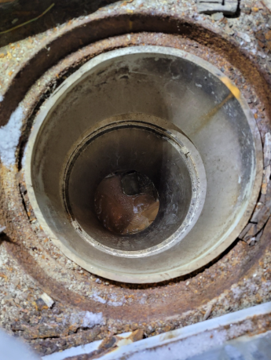
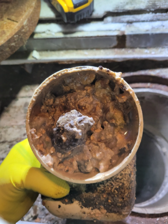
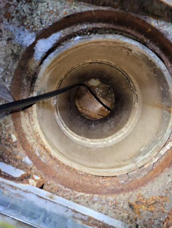
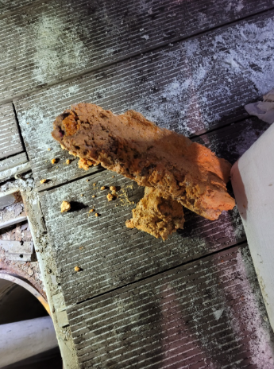
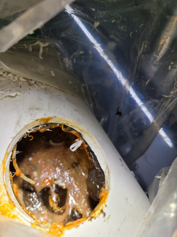

🏠 화성 향남 공장 하수구막힘 하길리 풍부한 경험의 기술력으로 빠른 처리해드렸습니다!
화성 향남 싱크대막힘 전문 시공 후기

📋 작업 개요
- 위치: 화성 향남, 향남, 화성
- 서비스 유형: 싱크대막힘, 변기막힘, 하수구막힘, 배관막힘, 맨홀막힘, 역류해결, 고압세척
- 작업 일시: 2022. 9. 26. 20:43
- 업체명: 하수구수사대 (010-5615-2118)
🔍 문제 상황
안녕하세요.하수구수사대 입니다.반갑습니다.
일상의 생활공간인 집, 학교, 학원 그리고 모든 일반상가를 포함해서 어느곳이나 화장실이 비롯하여 없는 공간은 없습니다. 그 중에서도 많은 사람들이 함께 사용을 하는 공용공간의 경우에는 화장실을 사용하는 횟수가 높을 수밖에 없습니다. 그러다 보면 자연스럽게 막힘이 발생하는 일도 많을 수 밖에 없습니다.
화성 향남 공장하수구막힘 하길리현장을 수리해드렸습니다.
회사 겸 공장으로 운영을 하고 있는 건물 내부에서 싱크대와 변기가 막히면서 역류까지 발생을 하고 있다는 이야기를 듣고 곧바로 현장으로 달려가게 되었습니다. 지금부터 현장의 막힘 해결 후기를 들려드리도록 하겠습니다.
화성 향남 공장하수구막힘 하길리현장과 같이 한 건물 내에서 여러곳의 막힘이 발생하는 경우에는 주로 메인 배관이 막히게 되면서 이러한 현상이 발생하는 경우가 많이 있습니다.

🔎 원인 분석
💡 전문가 진단: 화성 향남 공장하수구막힘 하길리현장을 수리해드렸습니다.
경험이 풍부한 업체에게 맡겨주셔야 합니다.
하수구수사대는 일반 가정집 뿐만 아니라 큰 상가나 빌딩등의 건물도 의뢰를 많이 받고 있기 때문에 오랜 노하우와 경험이 풍부한 곳이라고 할 수 있습니다. 이렇게 규모가 큰 건물에서는 저희처럼 경험과 노하우를 가지고 전체적인 배관의 연관성을 잘 파악할 수 있는 것이 중요합니다.
화성 향남 공장하수구막힘 하길리현장은 하루에도 수십 또는 수백 명의 직원들과 각종 협력사 등에서 이용을 하고 있는 만큼 이렇게 배수구가 막혀서역류까지 하는 상황이 생긴다면 그 피해와 당황스러움은 이루 말할 수 없을 것입니다.
신속한 현장 방문과 해결이 필요하다고 할 수 있는데요.
현장은 꽤 외진 곳에 위치하고 있어서 작업을 의뢰해 주신 건물 관리자분과 함께 피해 현장부터 점검을 하기 시작하였습니다. 외관상으로 보았을 때에는 크게 문제가 없어 보였지만 물을 사용을 할 때마다 아래쪽이 배수가 되지 않고 역류까지 하고 있는 상황이었습니다.

🔧 작업 과정
문제는 한곳이 아니라 주방의 싱크대와 배수구 그리고 화장실 변기에서 까지 동시 다발적으로 역류가 발생하고 있었는데요.이렇게 규모가 큰 현장에서는 배관의 위치가 정확히 어딘지를 확인하고 정확하게 아는 것은 어렵기 때문에 관로 탐지기라는 전문 장비를 이용하게 됩니다.
이번 현장의 경우에는
외부에 나와있는 곳곳에 맨홀만 확인을 하면서부터 이미 문제를 발견할 수 있었습니다. 원인은 맨홀과 연결되어 있는 우수관을 통해서 장기간에 걸쳐 빗물과 각종 이물질들이 함께 떠내려오다 보니 결국에 맨홀까지 막혀버리게 한 것이었습니다.
이와 관련하여 연쇄적으로 메인 배관에도 동시에 내부에서까지 막히게 되는 상황이 발생한 것이었습니다. 이러한 상황은 우리 주변에서 생각보다 많이 발생할 수 있습니다.
빗물로 인해서 역류까지 발생하기도 하는 것인데요.
화성 향남 공장하수구막힘 하길리 현장 역시도 맨홀 위쪽으로 물이 올라오고 있는 상황이어서 배관 내시경 작업도 쉽지 않았습니다. 먼저 석션기를 이용해서 차오른 물과 이물질 덩어리를 제거하면서 배관 내시경을 통해서 내부를 살펴보았는데요.
내부에는 물이 고이면서 들어간 진흙과 각종 이물질들이 뒤섞이면서 종합적으로 막힘 현상을 일으키는 원인이 된 것이었습니다. 이러한 이물질을 제거하기 위해서는 바로 고압세척이 필요한데요 배관 내부로 고압세척 기기를 삽입해서 바로 이물질 제거 작업을 진행하였습니다.
고압세척을 통하여 제거된 이물질들이 다시 맨홀 내부로 들어가지 않도록


✅ 작업 완료
수작업으로 모두 제거를 하면서 전체적인 작업을 모두 마무리하였습니다.
향남 공장하수구막힘 하길리
경기도 화성시 향남읍 상신하길로298번길 7-11 8층 805호




⚠️ 주방 싱크대 배관 막힘 예방 수칙
- ✅ 기름기가 묻은 식기나 프라이팬은 설거지 전 키친타올로 반드시 기름때를 닦아내세요.
- ✅ 주기적으로 싱크대 개수대에 뜨거운 물을 가득 받아 한 번에 내려 배관 내부 기름을 씻어내세요.
- ✅ 배수구 거름망을 미세한 필터로 사용하시고 음식물 찌꺼기가 틈으로 새어 들지 않게 관리하세요.
- ✅ 베이킹소다와 식초를 뜨거운 물과 함께 일주일에 한 번씩 부어주면 배관 살균과 막힘 예방에 좋습니다.
💡 핵심 정리
- 확실한 장비 작업(내시경 점검 및 샤프트 스케일링)으로 원인을 뿌리 뽑습니다.
- 작업 후 1년 이내에 동일한 부위 재발 시 100% 무상 A/S 서비스를 보장합니다.
- 서울 · 경기 · 인천 전 지역에 24시간 언제든 긴급 출동할 수 있도록 항시 대기 중입니다.
❓ 자주 묻는 질문 (FAQ)
🚨 화성 향남 싱크대막힘 문제로 고민이신가요?
정확한 원인 진단과 확실한 시공으로 재발 없는 해결을 약속드립니다.
24시간 긴급 출동 | 서울 · 경기 · 인천 전지역 | 1년 내 재발 시 무상 A/S